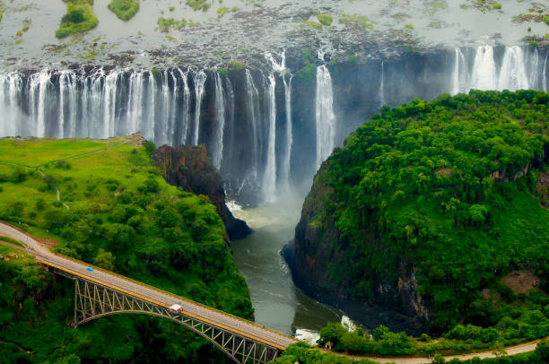
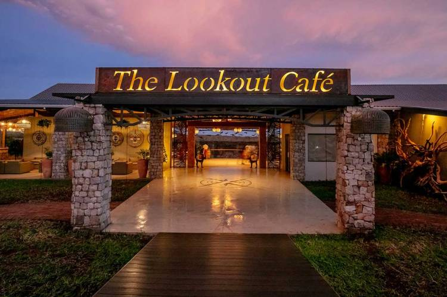
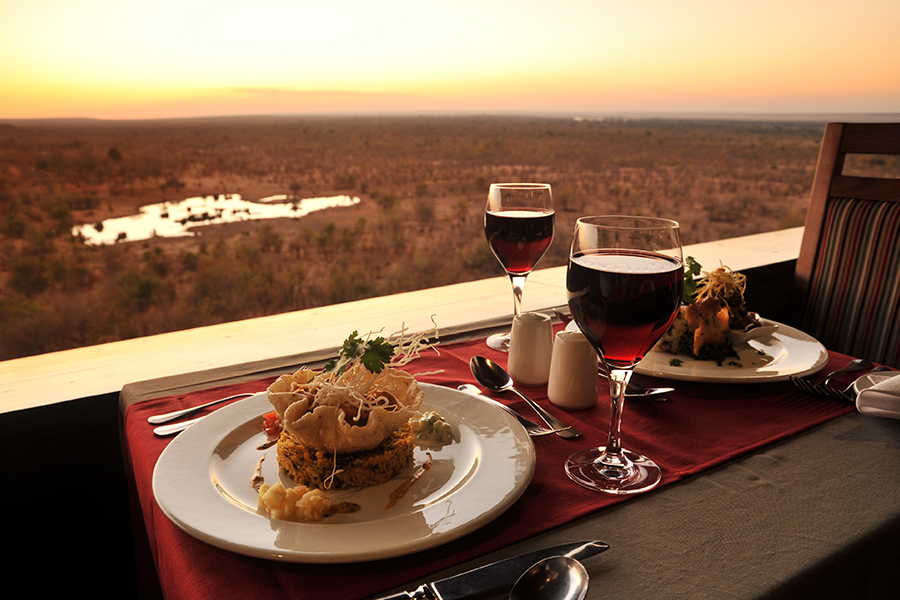

Why Victoria Falls?
Mosi oa-Tunya, "the smoke that thunders"
Victoria Falls is is undoubtedly one of the most spectacular natural wonders in the world. Spanning over a mile wide and dropping more than 350 feet, it is considered the largest waterfall on Earth. However, its significance goes far beyond its impressive size. It holds immense cultural and historical importance to the local indigenous people. Known as "Mosi-oa-Tunya" or "The Smoke that Thunders," it has been a sacred site for centuries. The falls are believed to be inhabited by powerful spirits, and rituals and ceremonies are still performed there today. Victoria Falls is not only visually stunning but also offers a range of thrilling activities for visitors. From bungee jumping off the famous Victoria Falls Bridge to white-water rafting in the Zambezi River below, adrenaline junkies flock here from all corners of the globe.
Victoria Falls is surrounded by an abundance of wildlife and lush vegetation. The spray from the falls creates a unique microclimate that supports a diverse ecosystem. Visitors can take part in safaris or simply enjoy walking through rainforests teeming with exotic birds and animals. Victoria Falls serves as a symbol of unity between Zambia and Zimbabwe. Despite being divided by borders, both countries share this natural wonder as a common heritage that brings them together. Victoria Falls stands out not just for its sheer size but also for its cultural significance, thrilling activities, rich biodiversity, and unifying power. It truly deserves its place among the world's most extraordinary natural wonders.
Twelve Facts about Victoria Falls
1. It is the largest waterfall in the world
Victoria Falls is neither the widest nor highest waterfall in the world, but it’s the world’s largest sheet of falling water, which solidifies this classification. It is twice the height of North America’s Niagara Falls, and is only rivalled by Iguazu Falls in South America. It is 108m tall and 1708m wide.


2. Victoria Falls is part of the Zambezi River
The Zambezi River is the fourth-largest in the African continent and spans across six different nations – its amazing journey spans an impressive 2,700 km. Along the way, you can see a range of wildlife and participate in a plethora of activities. Victoria Falls is the boundary dividing the upper and middle parts of the Zambezi.
3. It is located within two National Parks
Mosi-Oa-Tunya National Park is a UNESCO World Heritage Site that is home to part of Victoria Falls and is named so because “Mosi-Oa-Tunya” means “the smoke that thunders” – a perfect analogy for these awe-inspiring waters. Victoria Falls is also, perhaps unsurprisingly, found in Victoria Falls National Park.

4. Its English Name was chosen by David Livingstone
In 1855, British explorer and missionary David Livingstone was the first European to witness the magnificence of one of Africa’s most incredible sights, Victoria Falls. He named it for the British monarch at the time, Queen Victoria. While many places have reverted to their indigenous names, the local people had so much respect for him that it has remained unchanged.
5. You can see the falls from two countries
75% of the Falls can be seen from the Zimbabwean side, while the remaining 25% is visible from the Zambian side. While Zimbabwe has had negative media attention in recent years, locals assure visitors that it is incredibly safe, and typically makes for a more superior viewing experience.

6. Victoria Falls is one of the World's Seven Natural Wonders
The seven natural wonders of the world are Victoria Falls, Aurora Borealis, the Harbour of Rio de Janeiro, the Grand Canyon, the Great Barrier Reef, Mount Everest, and Parícutin.
7. It has several gorges
Victoria Falls is one of nature’s intricate mysteries, and features several principle gorges. These are the First, Second, Third, Fourth, and Fifth gorges – and the Songwe Gorge, named after the Songwe River, flowing in from the north east.

8. 500 million litres of water cascade every minute
The numbers almost seem too impossible to imagine! That’s the equivalent of 200 Olympic-sized swimming pools, to put things into perspective. It flows at a rate of 1088m3/s.
9. It rains at Victoria Falls all day
On the Zimbabwe side of the Falls you will find the Victoria Falls Rainforest, which is the only place on earth to see rain every single day of the year. The rains bless the area with lush greenery in the forest, and it’s recommended that visitors explore it as well.


10. The Falls create "Moonbows"
A rainbow is beautiful; a moonbow is a special and unique phenomenon which only occurs in two places around the world, with Victoria Falls being one of them. A lunar rainbow happens when the light of the full moon hits the Falls, and it is a sight to behold.
11. Plenty of wild animals call it home
If you’re venturing on out to Victoria Falls, be cautious (and pack a camera). You will be entering into the natural habitat of an abundance of animals, including many of the continent’s elusive “Big Five”. Be wary – crocodiles are particularly common in the region, so take extra care. Remember, part of respecting nature is appreciating that you could be in danger. Always listen to your local guides’ advice.


12. You can swim to the edge of the waterfall
If you’re a particularly daring traveller, you might enjoy swimming up to the edge of the Falls at Devil’s Pool with your guide. This is not something that should be attempted without proper consideration, as it involves a swim in the Zambezi and a reliance on the water to carry you. Once you reach the edge, however, the feeling is exhilarating. Consider it as the best infinity pool in the world! You can only do this when water levels are lowest, from September to December.
RESTUARANTS
My favorite Restuarants in Victoria Falls

The Lookout Cafe
An iconic restuarant where casual dining is a decadent affair. Menus range from cocktails and canapes to diverse meal options for seated dinners. Imported wine from South African vineyards and flavours foraged from nature make the `place on a plate` sentiment a reality.
Address:
Victoria Falls, Zimbabwe
What I like about it
This is one of the best brunch spots in Victoria Falls with delicious food, staggering views and exceptional services If you are looking for a fresh, vibrant menu with traditional as well as new flavours like local game meats then the Lookout Cafe is the place for you.

The Boma Restuarant
Specialising in a superb selection of traditional Zimbabwean dishes, The Boma offers a four-course meal combining a mouth watering choice of starters from the kitchen, soup from the campfire and a substantial barbeque buffet served on cast iron plates. They offer a wide variety of salads from the salad bar and to follow a choice of delicious desserts from the buffet area. Everyone’s tastes are catered for and whilst the adventurous are enticed with local delicacies such as Mopani worms and game stews, those wishing to enjoy beef, pork, fish and chicken or a variety of vegetarian meals are welcome to do so. The Boma is renowned for its warthog fillet.
Address:
Safari Lodge, Victoria Falls
What I like about it
Boma Dinner and Drum-an unforgettable evening show. Boma offers a legendary dining and entertainment experience that offers an unforgettable fusion of mouth-watering local cuisine, energetic dance performances, interactive drumming and traditional storytelling. It has, over the years, firmly established itself as a Victoria Falls “must-do” experience, providing a unique cultural experience that bombards the senses with the tastes, sights and sounds of Africa.

MaKuwa-Kuwa Restuarant
An award-winning MaKuwa-Kuwa Restaurant known for its unrivalled views overlooking a wildlife-rich waterhole. It is open on three sides and overlooks the waterhole at Victoria Falls Safari Lodge, offering a unique opportunity to view elephant and other wildlife as you enjoy your meal-truly some of the finest dining in Victoria Falls.
Address:
Safari Lodge, Victoria Falls
What I like about it
The restaurant is on the large deck above the Buffalo Bar, and is completely open with views of the Zambezi National Park that goes on forever. There is a watering hole for the wildlife to drink from, so more often than not, guests are dining with the wildlife right in front of them. A very relaxed environment and certainly worth visiting. Enjoyed lunch time experience of feeding the vultures.
Gallery
Your eyes can see more than this
Explore new horizons and create lasting memories